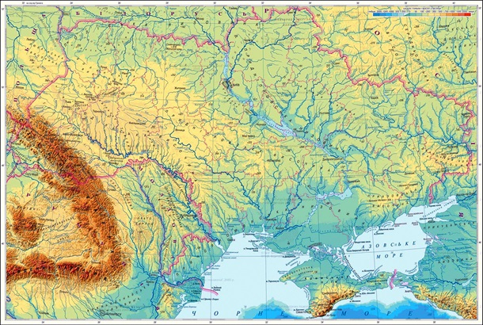
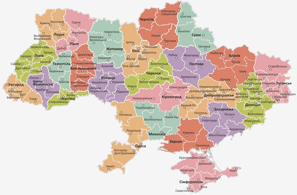

Конститу́ція Украї́ни — Основний Закон України. Ухвалена 28 червня 1996 року на 5-й сесії Верховної Ради України 2-го скликання. Конституція України набрала чинності з дня її прийняття. На згадку про прийняття Конституції в Україні щорічно святкують державне свято — День Конституції України.
Походження назви - Україна
Україна має декілька історичних назв, що є частково або повністю тотожними. Сучасна Україна розташована на землях, що у перших століттях нашої ери були відомі здебільшого як «Скіфія» та «Сарматія», однак етнічна і культурна тяглість від тогочасного населення цих земель до сьогодення переважно вважається опосередкованою. Найвідомішими історичними назвами, що стосувалися сукупності земель, на яких відбувався етногенез українського народу та мала місце відносна тяглість його державності, були: «Русь», «Рутенія», «Роксоланія» , «Україна», «Військо Запорозьке», «Гетьманщина».
Географія та природа
Розташування
Україна розташована в південно-східній частині Європи. Вона має спільні сухопутні державні кордони з
Білоруссю на півночі, з Польщею на заході, зі Словаччиною, Угорщиною, Румунією і Молдовою на південному
заході й із росією на сході. Південь України омивається Чорним та Азовським морями. Морські кордони вона
має
з Румунією і росією.
Загальна площа України становить 603 700 км², вона становить 5,7 %
території
Європи й 0,44 % території світу. За цим показником вона є другою за величиною серед країн Європи (або
найбільшою країною, яка повністю лежить у Європі). Площа виключної морської економічної зони України
становить 72 658 км².

Клімат
Територія України лежить переважно в помірно-континентальній області помірного кліматичного поясу зі зростанням континентальности з північного заходу на південний схід. Південний берег Криму виділяється в окремий регіон субтропічного середземноморського клімату. В Українських Карпатах і Кримських горах висота місцевості й експозиція схилів зумовлюють вертикальну зональність клімату.
Основною закономірністю в розподілі опадів на території України є їхнє зменшення з півночі й північного заходу в напрямку на південь і південний схід. Найбільші річні суми опадів помічено в Українських Карпатах — 1500 мм (полонина Плай — 1663 мм) і Кримських горах (1000—1200 мм), найменші — на причорноморському узбережжі й на Присивашші.
Рельєф
У рельєфі України переважають рівнини (95 % усієї площі), що належать до південно-західної окраїни Східноєвропейської рівнини. Вони поєднують Поліську, Придніпровську й Причорноморську низовини, що займають 70 % поверхні України, а також Волинську, Подільську, Придніпровську, Донецьку й інші височини. Пересічна абсолютна висота рівнин становить 175 м.
В Україні знаходиться найвища точка Східноєвропейської рівнини — гора Берда, висотою 515 м над рівнем моря.
Гірські масиви в Україні представлені частиною Карпатських гір — Українськими Карпатами, де розташована найвища вершина України — гора Говерла (2061 м над рівнем моря), й Кримськими горами, найвищою вершиною яких є гора Роман-Кош (1545 м).
Адміністративний поділ
В Україні, яка є унітарною державою, існує єдиний вид територіального устрою: адміністративно-територіальний устрій (поділ). Згідно зі ст. 133 Конституції України систему адміністративно-територіального устрою України становлять: Автономна Республіка Крим, області, райони, міста, райони в містах, селища і села. Сучасна система областей та районів України сформована з липня 2020 року, коли були утворені 136 районів (де-факто районів 140, бо 14 районів у АР Крим будуть ліквідовані лише після деокупації) замість старих 460.

Державний устрій
Україна — унітарна демократична парламентсько-президентська республіка і має багатопартійну політичну систему. В Україні діють такі основні інститути державної влади: Президент, законодавча, виконавча та судова влади. Виконавча влада представлена Кабінетом Міністрів, центральними органами виконавчої влади та органами виконавчої влади на місцях. Законодавчий орган — парламент — називається «Верховна Рада України». Судова влада представлена Конституційним Судом України та судами загальної юрисдикції — системою загальних і спеціалізованих судів різних інстанцій.